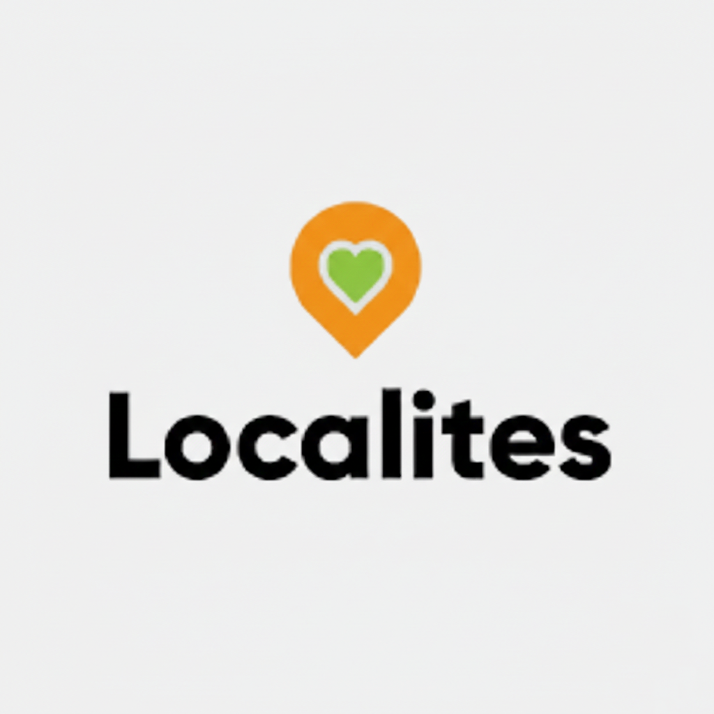

Worked as a Business Analyst Intern for three months, where I supported data analysis and business research activities. Assisted in gathering and analyzing business requirements, preparing reports and dashboards, and identifying process improvements. Collaborated with cross-functional teams to translate business needs into actionable insights, contributing to data-driven decision-making and operational efficiency.
